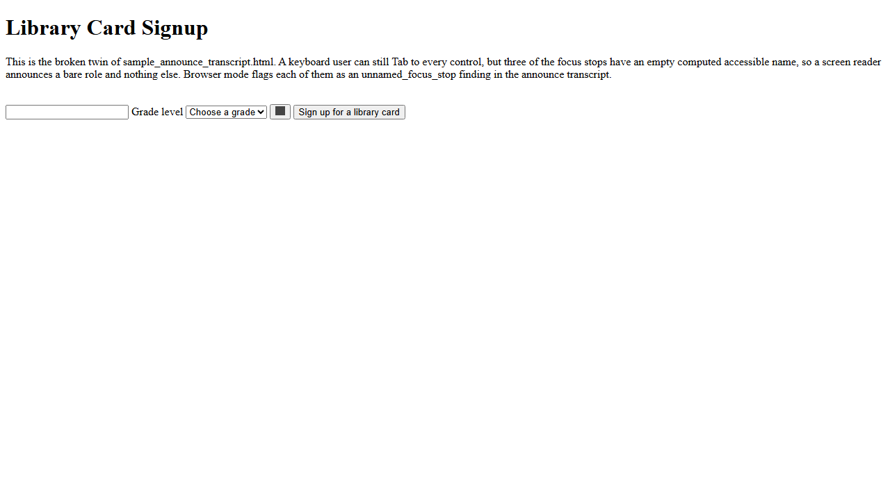

Legend
Marker numbers show the Tab order observed by A11yway during this browser run. Hover a marker to see its announced role and name.
This is a browser observation, not a full screen-reader simulation or accessibility certification.
Viewport observed: 1280 x 720 CSS pixels.
Announce Transcript
Computed by Chromium's accessibility tree for each numbered focus stop. Real screen readers (NVDA, JAWS, VoiceOver) can announce things differently.
- link, (no accessible name)
- textbox, (no accessible name), required
- combobox, "Grade level", collapsed
- button, (no accessible name), collapsed
- button, "Sign up for a library card"

1
2
3
4
5